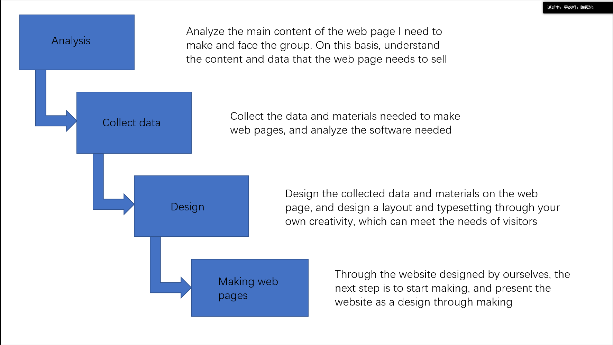
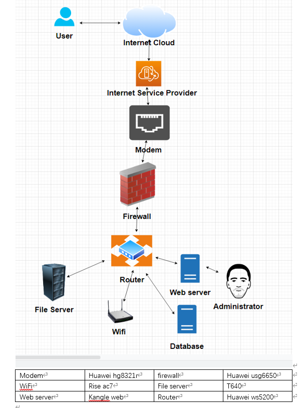

IT project

It projects I want to complete

Hardware and software
The future IT project I want to complete is the information transmission system of the Internet. The hardware and software I need to make this web page include Huawei hg8321r modem, the firewall I use is Huawei usg6650, and the router I use is Linksys. After using these brands I choose, other options are common in the market. I think my information transmission system will be welcomed by the public
value and technological process
The completion of the Internet information transmission system I designed will greatly accelerate the speed of user information transmission, and I have also added a firewall to our information transmission, so you can more safely transmit the information and avoid information leakage
Our information transmission process is that the user inputs the information into the Internet clout first, and then transmits it to the Internet service provider. After ensuring the security of the information through our modem and firewall, it is transmitted to the router, which will distribute the information to the user's host and file server
And james pamper to answer questions about my system diagram
| pamper（xu hongyou） | james（zhuang biao） | |
| Name this system? | information transmission system of the Internet. | information transmission system of the Internet. |
| What are the system objectives? | Can quickly transmit information. | Quickly transmit information to the receiver. |
| List 3 essential system features and components? | 1. transmitting information 2. protecting user information 3. enabling two users to contact each other 1. firewall 2.web server 3.router | 1. it is convenient for company information transmission 2. information encryption 3. information transmission is safer 1. firewall 2.file server 3.modem |
| List 3 essential hardware from this system | 1.route 2.modem 3.file server | 1.route 2.file server 3.web server |
| List 3 essential software from this system | 1.WiFi 2. Internet cloud 3. information receiving port | 1.information receiving port 2. Internet cloud 3.WiFi |
| List 2 external system components. | 1. User's host, accepting incoming information 2. Information transmission system | 1. Information repository 2. Information protection password |
| List 2 system benefits | 1. protect data 2. transmit information quickly. | 1. protect data 2. transmit information quickly. |
| List 2 project difficulties: | 1. It requires a large amount of money. 2. Subsequent maintenance is troublesome. | 1. Subsequent maintenance problems will be more serious. 2. Start-up capital needs are large. |